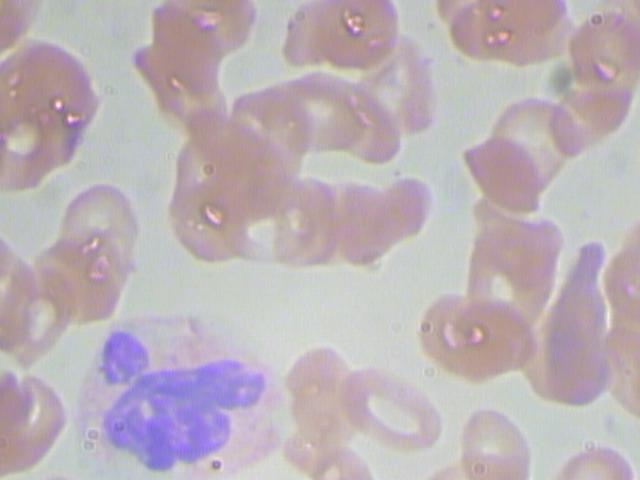
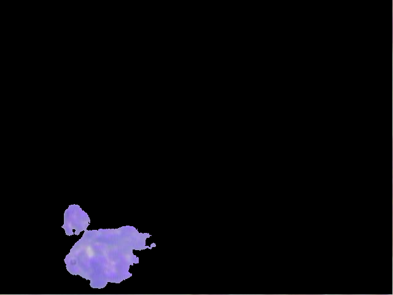
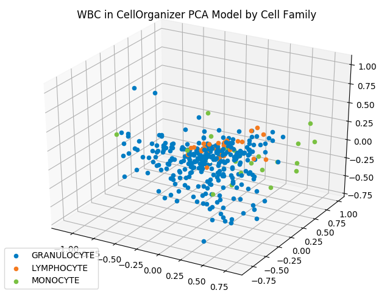
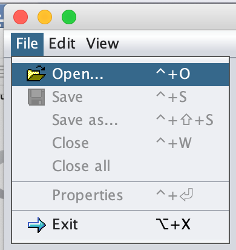
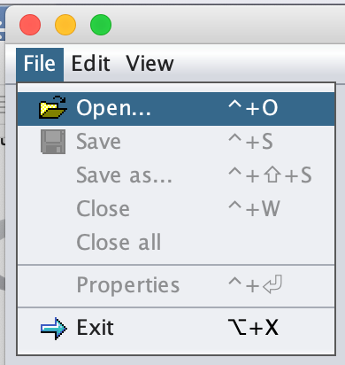
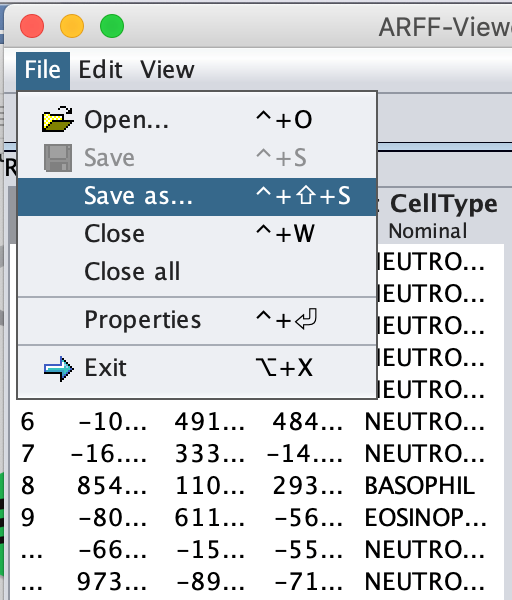
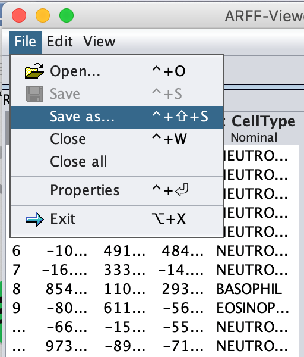

CellOrganizer Tutorial
Cell Organizer Tutorial
For the following steps, a variety of software and programs are used to go through our PCA Pipeline for the Kaggle White Blood Cells dataset. Please ensure that the following pre – requisite applications have been installed before continuing.
| Required Applications | Terminal Command to Check Version |
|---|---|
| Python (v. 3.7.3) | python –version |
| R (v. 3.5.2) | R –version |
| MATLAB (2016b or newer) | - |
| CellOrganizer (v. 2.8.x) | - |
| RStudio | - |
Furthermore, we ask that you download our WBC_PCAPipeline folder onto your desktop and ensure that the following contents are available, where v represents an open directory and * represents a file:
v WBC_PCAPipeline v Data v RawImgs * BloodImage_00001.jpg · · · * BloodImage_00410.jpg * WBC_Labels.csv v Step1_Segmentation * WBC_imgSeg.R v Step2_Binarization * WBC_imgBin.m v Step3_PCAModel * WBC_PCAModel.m v Step4_ShapeSpaceVisualization * WBC_SS_CellClass.py * WBC_SS_CellType.py v Step5_Classification * README.pdf
Change into the WBC_PCAPipeline directory by running the following command in a new terminal:
> cd ~/Desktop/WBC_PCAPipeline
NOTE: Please ensure the WBC_PCAPipeline file is onto your desktop. Otherwise, you will have to manually change all file paths to point to the appropriate folders on your computer. While unconventional, we’ve noticed occasional software glitches with using setwd() or pwd otherwise.
Step 1 Nuclear Segmentation
For this dataset, we would like to identify the white blood cell types by the nuclear shape since that particular feature is easy to verify with the naked eye. Moreover, the nucleus of the white blood cell(s) in each image are of a distinctly darker color than the rest of the red blood cells or platelets in the image. This allows us to implement a technique called thresholding. In thresholding, we examine each pixel in the image and reset the color value of the image according to our thresholds. If the original RGB values for the pixel are above the thresholds we set in each channel, then we reset the pixel value to white. All other pixels below the thresholds will be set to black (ideally). This way, our target, the white blood cell nucleus, is a white blob in a black background.
Method: RStudio
Open RStudio. Navigate to File –> Open File Step through the files until you find Desktop/WBC_PCAPipeline/Step1_Segmentation/WBC_imgSeg.R. Source this file. Should you be asked in the console about upgrading dependencies during the EBImage library installation, type in a and hit Enter/Return.
NOTE: If you source the file multiple times, three directories are created each time within the Data folder with the form of SegImgs_i, ColNuc_i, and BWImgs_i,where i is a natural number. The images are only segmented into the most recently created directories (those with the largest i). Should you run into trouble and need to run this file multiple times, ensure that future filepaths are pointing to the right folders!
After we have sourced our R file, you’ll notice the creation of three directories of the form: SegImgs_1, ColNuc_1, and BWImgs_1 within the Data folder.
Assuming the file ran correctly, the first directory, SegImgs_1, contains all of the segmented nuclei images where the white blood cell nucleus is in white and the rest of the image is seemingly in black. The second directory, ColNuc_1, should be empty, but will eventually contain all of the segmented nuclei images, however the white blood cell nucleus will be in its original color and the rest of the image will be in black. Finally, the third directory, BWImgs_1, should be empty, but will eventually hold binarized versions (strictly black and white) of the images in SegImgs_1.
Nuclear Segmentation Example using BloodImage_00001.jpg
 Raw Image Segmented Nucleus in Greyscale
Step 2 Image Binarization and File Conversion
As mentioned in Step 1, we would ideally have black and white segmented images as a result of running the above commands. However, we would like to ensure that our segmented images are in black and white, and if not (suppose they are in greyscale), we would like to convert them into this form. Furthermore, the CellOrganizer PCA method requires all images to be in TIFF format, so this step handles that file conversion as well. To go an extra step, we also want another set of images that show the segmented nuclei in color while the background is in black.
In this step of the pipeline, we open up MATLAB for running the binarization and file conversion code.
Method: MATLAB
Open MATLAB. Run the following commands in the MATLAB command window:
> clear
> clc
> cd ~/Desktop/WBC_PCAPipeline/Step2_Binarization
> WBC_imgBin
As a result, the BWImgs_1 directory will now contain binarized TIFF versions of the segmented images. That is, each greyscale image resulting from the nuclear segmentation step with have pixel values strictly of 0, which is black, or 1, which is white. Our other result is that the ColNuc_1 directory will now contain TIFF versions of the segmented images where the nuclei is in color and the background is in black. We won’t be using these images further along the pipeline, but they are useful to look at for visual confirmation that the majority of the nucleus is being considered for the PCA model.
Binarization and Color Nuclear Segmentation Example using BloodImage_00001.jpg
 Nuclear Segmentation in B/W Nuclear Segmentation in Color
Step 3 PCA Model Generation
Having completed Steps 1 and 2, all of our remaining images, and their subsequent labels, should be pre – processed and ready to train into a PCA model. In CellOrganizer, this is sampled as demo2D08.
In this step of the pipeline, we return to MATLAB for running a modified version of CellOrganizer’s demo2D08 in order to generate the PCA model for our white blood cells. This model would then be used to plot the shape space by either cell type or cell class. Furthermore, we do some post – processing cleanup to ensure our resulting model could be easily read into the visualization code by using only the first three principal components.
Method: MATLAB
Open MATLAB. Change into your CellOrganizer directory. Run the following command in the MATLAB command window:
> setup
Run the following commands in the MATLAB command window:
> clear
> clc
> cd ~/Desktop/WBC_PCAPipeline/Step3_PCAModel
> WBC_PCAModel
As a result, the Step3_PCAModel and Step4_Visualization directories have been updated. The principal components along with the assigned label to each cell are captured in the WBC_PCA.csv file within the Step4 directory. Information about the images used and the CellOrganizer generated shape space can be found by clicking on Step3_PCAModel/report/index.html.
NOTE: For any subsequent run of the WBC_PCAModel file, make sure to delete any log and param files that have been created from a previous run. All other files will be overwritten unless preemptively removed from the WBC_PCAModel file’s access. Saving the files can be done by either compressing the files into a zip folder or removing them from the directory.
To look at our model results, we want to do the following while in MATLAB: Run the following commands in the MATLAB command window:
>> load(‘WBC_PCA.mat’);
>> scr = model.nuclearShapeModel.score;
Double – click on the scr variable in the Workspace window.
In the matrix on screen, each row represents an image and each column represents the subsequent PCA components for the image. For the purpose of our shape space visualization, we will only be focusing on the first three principal components.
Step 4 Shape Space Visualization
Having generated a PCA model from the images and completed the post – processing in Step 3, we are now ready to visualize our results! In this step of the pipeline, we open up Python to visualize the computed shape space by label. The goal is to see clusters of cells within the same region of the same type. We can classify our white blood cells by two different parameters, cell type or cell family. If we are classifying by cell type, then we are looking for clusters of neutrophils, eosinophils, basophils, lymphocytes, and monocytes. That being said, neutrophils, eosinophils, and basophils belong to the same family called granulocytes. Thus, if we are classifying by cell family, then we are looking for clusters of granulocytes, lymphocytes, and monocytes.
Method: Python by Cell Family
Open a new terminal. Run the following commands in terminal:
> cd ~/Desktop/WBC_PCAPipeline/Step4_Visualization
> python WBC_CellFamily.py
As a result, you can click, drag, and rotate the graphical space to see the clusters of cell classes by color (a legend can be found in the upper right - hand corner). Furthermore, an image file of this visualization is saved within the current directory under WBC_ShapeSpace_CF.png.

Method: Python by Cell Type
Open a new terminal. Run the following commands in terminal:
> cd ~/Desktop/WBC_PCAPipeline/Step4_Visualization
> python WBC_CellType.py
As a result, you can click, drag, and rotate the graphical space to see the clusters of cell classes by color (a legend can be found in the upper right - hand corner). Furthermore, an image file of this visualization is saved within the current directory under WBC_ShapeSpace_CT.png.

Step 5 Classification
To convert our current PCA pipeline coordinates to a format to be used in Weka, we need to convert our WBC_PCA.csv file into arff format.
Method 1: Weka for File Conversion
Open Weka.
Navigate to Tools –> ArffViewer.
 Navigate to File –> Open

Change the Files of Type option to CSV data files.
Navigate to File –> Open

Change the Files of Type option to CSV data files.
 Locate the WBC_PCA.csv file in the Step4_ShapeSpaceVisualization folder and press Open.
Locate the WBC_PCA.csv file in the Step4_ShapeSpaceVisualization folder and press Open.
 Once all the data is loaded on screen, navigate to File –> Save as … .

Locate the Step5_Classification folder, remove the .csv extension in the File Name field and press Save.
Once all the data is loaded on screen, navigate to File –> Save as … .

Locate the Step5_Classification folder, remove the .csv extension in the File Name field and press Save.

As a result, our PCA pipeline coordinates have now been converted to the file format that Weka accepts for further classification. This file should be saved as WBC_PCA.arff in the Step5_Classification subfolder of the WBC_CellClass folder.